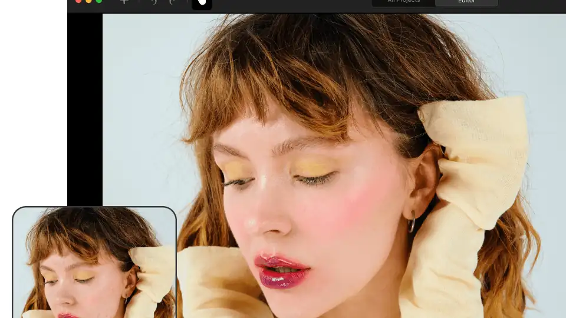
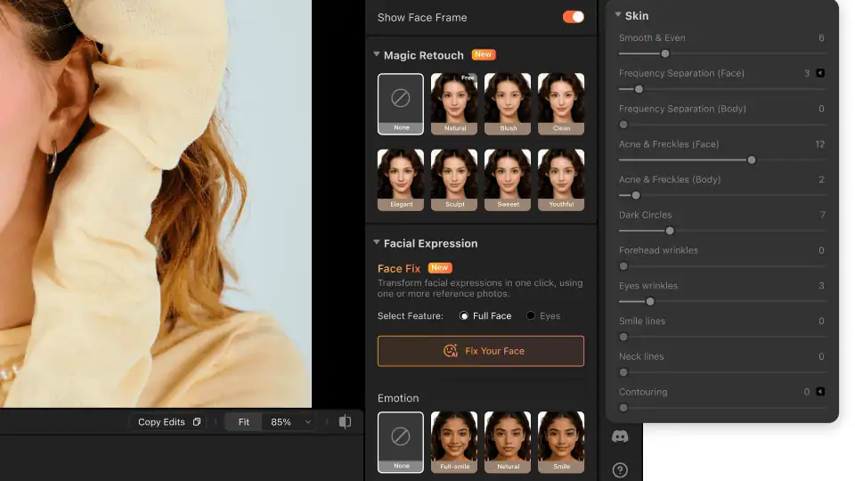

Airbrush Studio is here: the AI that unblinks your group photos comes to Windows and Mac
Pixocial launched Airbrush Studio on October 11 — a free desktop app for Windows and Mac that brings its AI portrait toolkit to the big screen: a closed-eye fix that rebuilds blinked eyes, one-click expression changes, and skin retouching that keeps your freckles.
- Pixocial Technology (Singapore) Pte. Ltd., behind the flagship Airbrush mobile app, announced the launch of Airbrush Studio on Sunday — a desktop photo-editing application for Windows and Mac.
- The debut release leads with three tools: Closed Eye Fix (analyzes the subject's face and recreates a natural open eye matched to the image's lighting and perspective), Expression Adjustment (one-click full smile or neutral look without distortion), and Skin Retouch (intelligent sliders turning dodge & burn and frequency separation techniques into tools that smooth skin while preserving texture and freckles).
- Airbrush Studio is a free download: Windows at airbrush.com/photo-editor-for-pc, Mac at airbrush.com/mac-photo-editor.
- The company claims more than 500 million Airbrush users worldwide and a 4.8/5 App Store rating; Studio is its first serious desktop bid against Lightroom and Photoshop, positioned as a companion rather than a replacement.
- 'Our goal is to help photographers stay focused on their creative vision,' said Lia Qu, Product Lead at Airbrush Studio, in the release — 'efficiency without compromising quality.'
Pixocial Technology (Singapore) Pte. Ltd., the company behind the flagship Airbrush mobile photo-editing app, announced on Sunday the launch of Airbrush Studio, a desktop photo-editing application for Windows and Mac. The pitch is simple: take the AI portrait tools that made Airbrush a half-billion-user mobile app and put the same one-click fixes in a photographer's desktop workflow.
Three tools aimed at the photo you almost got
The debut release leads with three tools that target the small disasters of portrait and group photography. Closed Eye Fix rebuilds blinked eyes in group shots: the tool analyzes the subject's face and recreates a natural open eye matched to the lighting and perspective of the image. Expression Adjustment applies expressions such as a full smile or a neutral look with a single click, with what the company describes as realistic results without distortion. Skin Retouch turns pro techniques like dodge & burn and frequency separation into intelligent sliders that smooth skin while preserving natural texture and freckles.

From phone to desk
Airbrush is a mobile-first brand — the company says it has more than 500 million users worldwide and holds a 4.8/5 App Store rating — and Studio is its first serious bid for the desktop, where Lightroom and Photoshop still own the professional workflow. The announcement positions it as a companion rather than a replacement: guided, portrait-specific tools for photographers, creators, and enthusiasts who want faster retouching without giving up creative control.
“Our goal is to help photographers stay focused on their creative vision, whether they're behind the lens or refining the final image,” said Lia Qu, Product Lead at Airbrush Studio, in the release. “With Airbrush Studio, we're bringing the power of AI to the desktop, allowing creators to achieve flawless, high-end results faster than ever before. It's about efficiency without compromising quality.”

Availability
Airbrush Studio is available now as a free download for Windows (airbrush.com/photo-editor-for-pc) and Mac (airbrush.com/mac-photo-editor). Whether the blink-fix earns its keep depends on one thing: the rebuilt eye looking like you on a good day, not like someone else entirely.
Frequently asked questions
What is Airbrush Studio?
A desktop photo-editing application for Windows and Mac from Pixocial Technology (Singapore), the company behind the Airbrush mobile photo-editing app. It brings Airbrush's AI portrait tools — a closed-eye fix, one-click expression changes, skin retouching — to the desktop photographer's workflow.
What do the three debut tools do?
Closed Eye Fix rebuilds blinked eyes in group shots, analyzing the face and recreating a natural open eye matched to lighting and perspective. Expression Adjustment applies a full smile or neutral look with one click without distortion. Skin Retouch turns pro techniques like dodge & burn and frequency separation into intelligent sliders that smooth skin while preserving natural texture and freckles.
Is it free, and where do I download it?
Yes — Airbrush Studio is a free download, available now for Windows (airbrush.com/photo-editor-for-pc) and Mac (airbrush.com/mac-photo-editor).
Who is it for, and does it replace Lightroom or Photoshop?
It's aimed at photographers, creators and enthusiasts who want faster portrait retouching without giving up creative control. The announcement positions it as a companion rather than a replacement — guided, portrait-specific tools alongside the professional workflow where Lightroom and Photoshop still dominate.